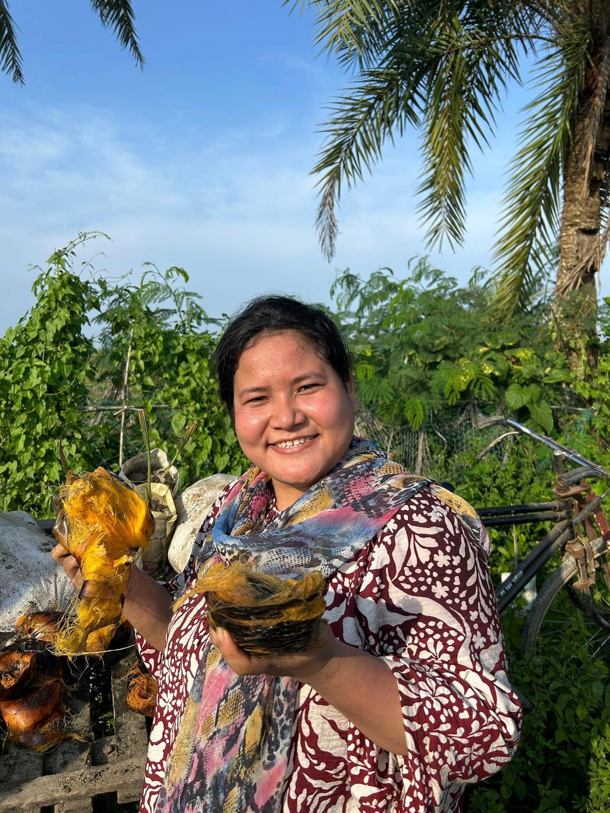

The challenge
Sea-level rise, cyclones and salty soil are already changing life along Bangladesh’s coast.
In Guliakhali, a coastal village in Sitakunda, rising seas put homes at risk of going under water. Safe drinking water is scarce, and women spend much of their day collecting it, time they cannot spend earning an income or becoming financially independent.
The people closest to the water carry the first impacts of climate shocks. When a cyclone hits, their homes, soil and freshwater are the first things at risk.
GBM is our response: gentle, practical, and rooted in place and people.
What makes our approach different
We protect the coast with nature, people and culture working together.
Living coastal protection
Mangroves and palmyra palms slow down waves, hold soil together and protect freshwater. They are low-cost, repairable and grow stronger with time.
Climate justice
We treat coastal women not as beneficiaries but as co-designers, trainers and keepers of local resilience plans.
Reviving palmyra culture
Every palmyra grove carries crafts, stories and skills. Restoring the trees restores that memory and reduces dependence on cheap, fragile plastics.
What we plant
Each species is chosen for how well it protects the coast along the Bay of Bengal. Select a tree to learn more.
Keora mangrove
Keora is a mangrove that grows where the land meets the sea. Its dense roots hold shifting coastal soil in place and absorb wave energy during cyclones.
- Germinated at the Shyamol Churir Nursery, then planted at Guliakhali
- Its fruit, the mangrove apple, is made into Keora pickle by local women

Palmyra palm (Tal)
The palmyra palm is a tall, heat-resistant heritage tree with deep roots that help hold water in the soil. It is planted in rural Bangladesh to help reduce deaths from lightning.
- Planted along the Guliakhali shore and the Patenga airport road
- Its fruit and leaves are used for food, crafts and the yearly Palmyra Fruit Festival

Date palm (Khejur)
The sugar date palm is a hardy native palm valued in Bangladesh for its sweet sap. It grows well alongside palmyra in coastal and rural areas.
- Raised as saplings in the GBM nursery with women from Sitakunda
- Its saplings were showcased at the 2024 Palmyra Fruit Festival

Trees or concrete walls?
Why we choose living protection for the coast.
Concrete embankments
- Expensive to build and repair
- Weaken over time
- Built for communities, not with them
Mangrove and palmyra belts
- Low-cost and easy to replant
- Grow stronger and adapt over time
- Planted and cared for by local women